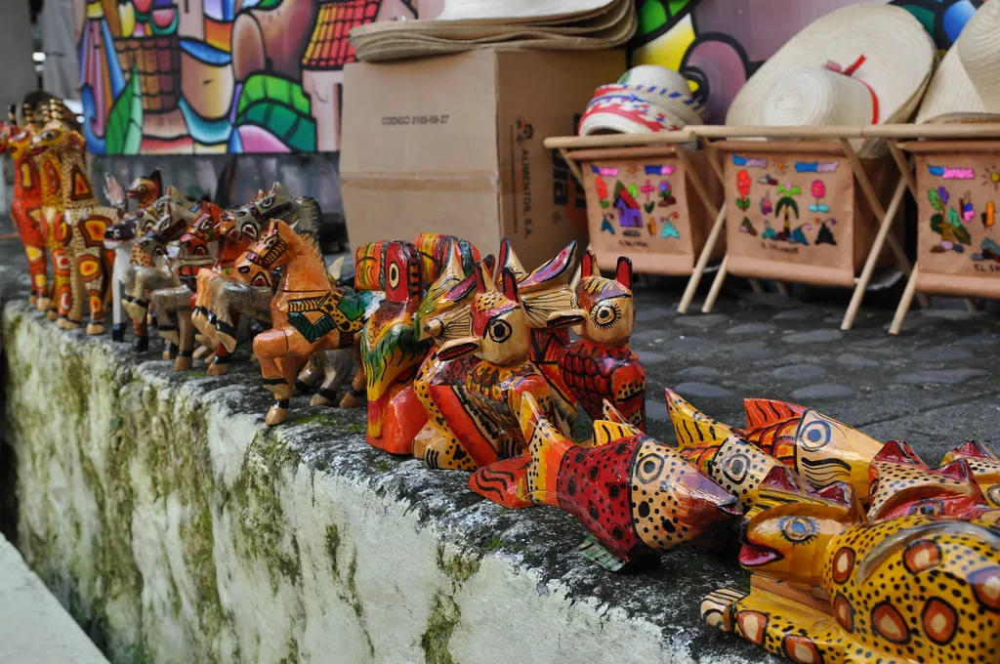
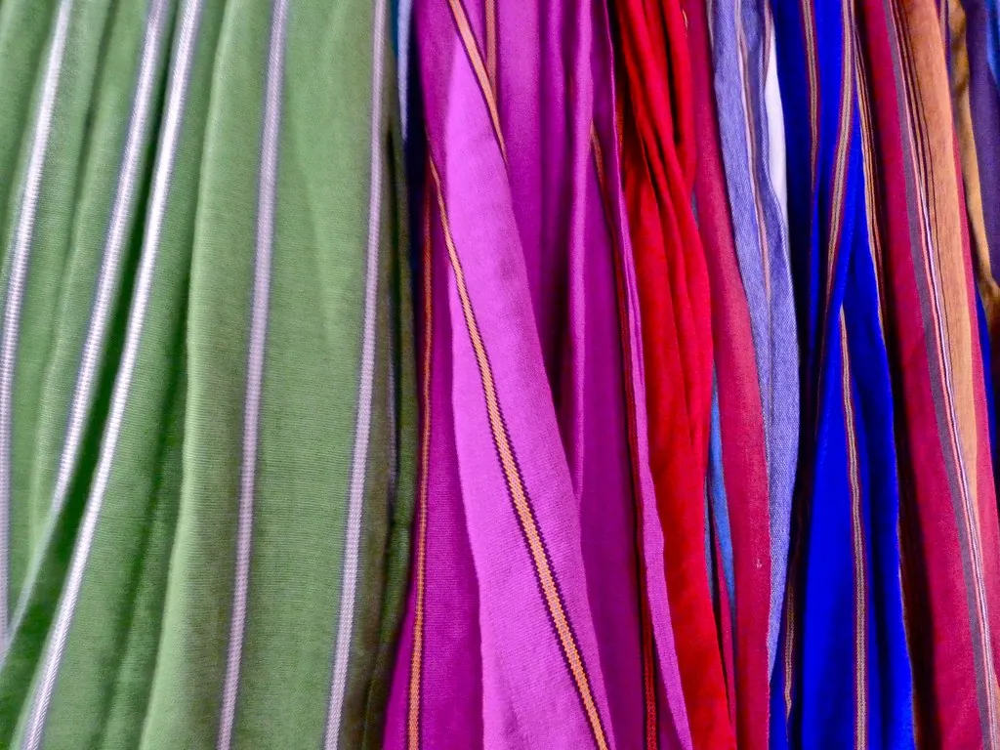
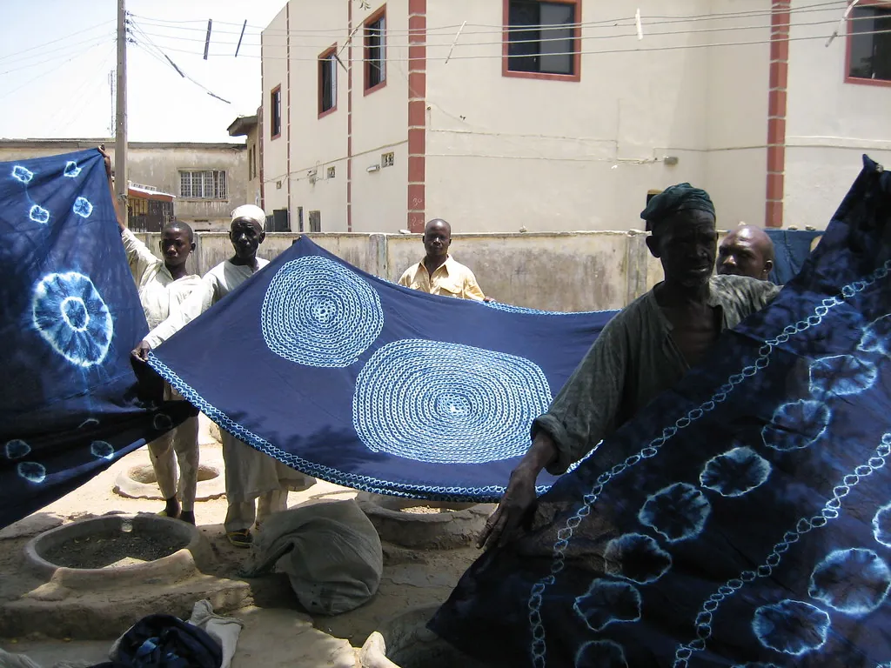
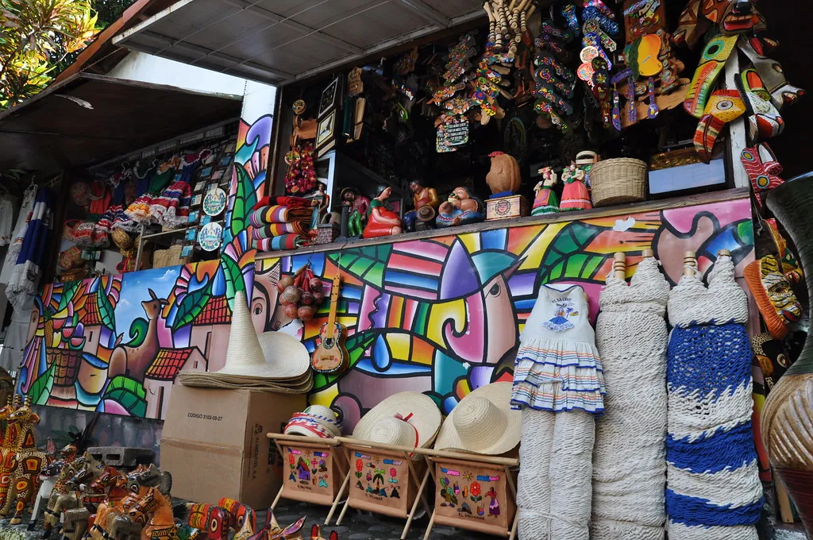

Artesanías Lily
Salvadoran handicrafts and gifts in San Salvador. Open every day.

What are you looking for?
Tap a tag and WhatsApp opens with your question to Lily. She can tell you what’s on the shelf today.



Find the shop
Alameda Manuel Enrique Araujo, San Salvador. The same avenue as the Mercado Nacional de Artesanías.
Open every day, 9am to 5pm.